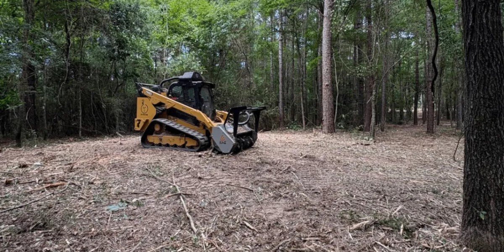
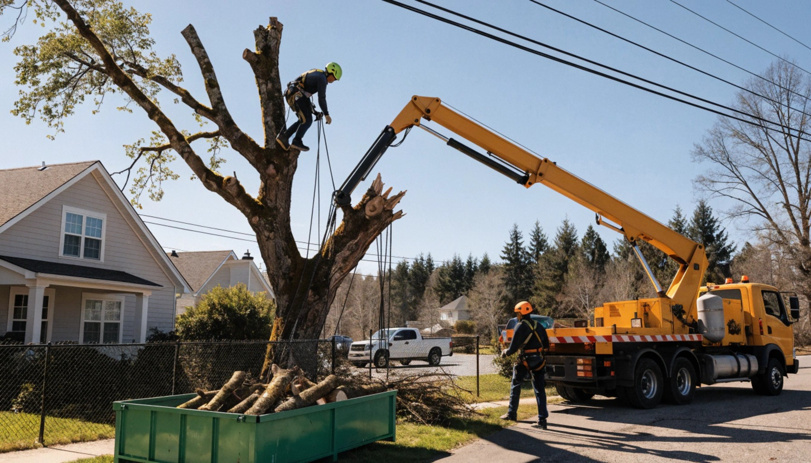
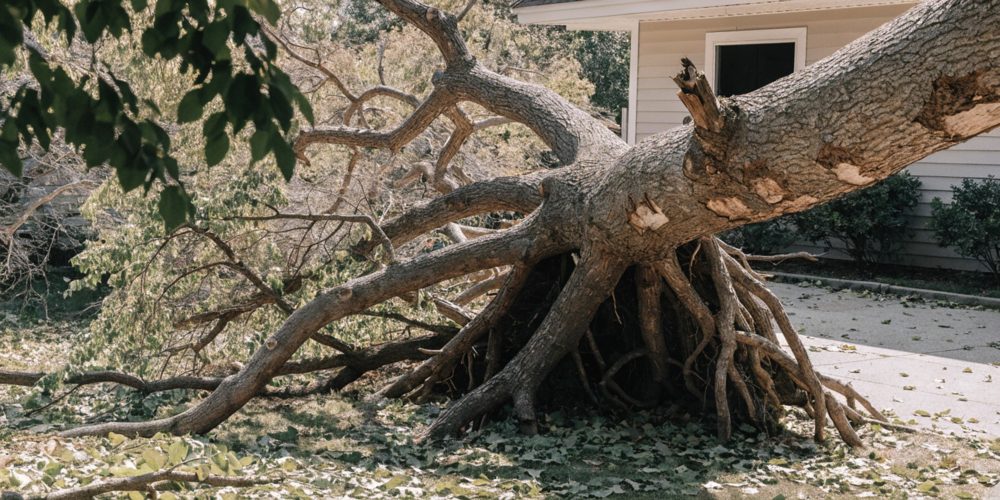
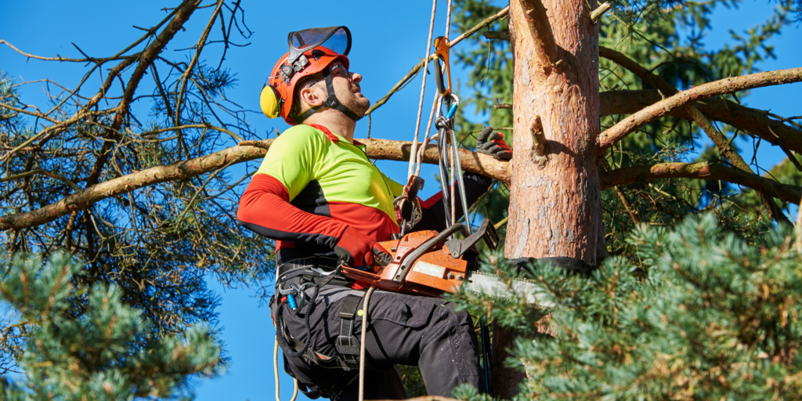
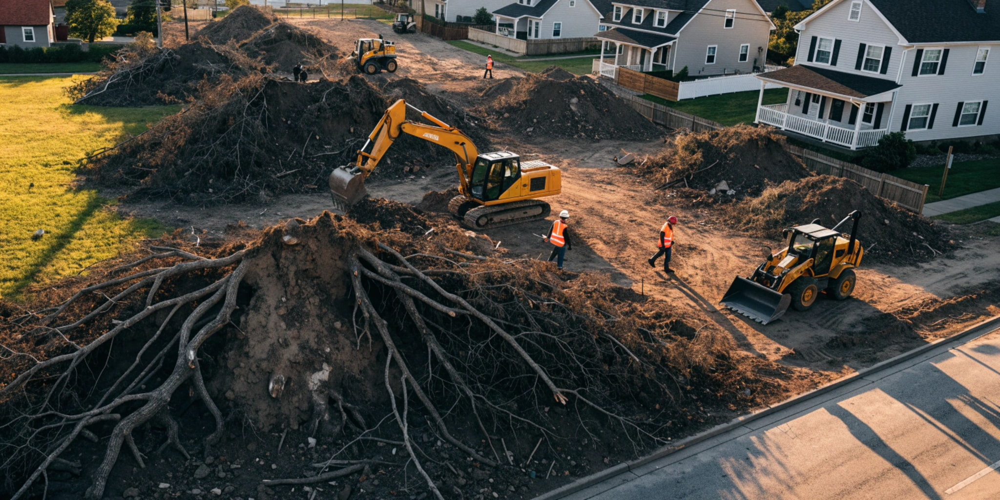

Surface Root Removal & Topsoil Service in Huntsville Metro & North Alabama
Stop destroying your lawnmower blades and eliminate tripping hazards in your yard. We specialize in precision grinding exposed lateral tree roots—common across North Alabama's red clay—and restoring your lawn with fresh topsoil grading.
Root Grinding Price Calculator
Calculate surface root & topsoil costs
Why Do Trees Surface Their Roots in the Tennessee Valley?
If you live in the master-planned communities of Madison, historic homes in Decatur, or along the slopes of Monte Sano Mountain, surface roots are a constant headache. The culprit is our unique local geology.
The foothills of the Cumberland Plateau and the Highland Rim feature heavy, compacted red clay resting on shallow limestone karst bedrock. Because rainwater and oxygen struggle to penetrate dense clay, mature species like Silver Maples, Sweetgums, Pin Oaks, and Sycamores push lateral roots directly across the soil surface to survive.
Over time, these knobby roots break mower blades, trip children, and buckle concrete driveways. Our specialized low-impact grinders trim surface roots below grade without harming the tree, followed up by rich, screened topsoil grading so you can establish pristine turf grass.
Dixie Alley Storm Risk Consideration
Our region experiences intense spring microbursts and severe weather. Over-severing structural roots near the trunk can destabilize a mature canopy. Our ISA Certified Arborist ensures roots are pruned safely, keeping your home safe during Tennessee Valley storms.
Lawn & Root Restoration
Drag slider to compareReal client yard in Madison, AL: Exposed maple roots ground 4" below grade & prepped with screened topsoil.
Surface Root Service Costs
Estimated rates based on our standard pricing model. Final quotes are verified via photo text.
| Service / Factor | Estimated Rate | Description |
|---|---|---|
| Minimum Service Call | $175 base | Base mobilization fee for dispatching equipment and crew. |
| Basic Root Grinding | $3.50 / linear ft | Standard grinding of exposed roots in an open yard (added to base). |
| Topsoil & Leveling | +50% of cost | Haul away wood tailings and backfill with screened topsoil. |
| Near Structures | +20% hazard fee | Proximity to concrete driveways, walkways, fences, or foundations. |
| Narrow Gate Access | +$35 flat fee | Additional labor/equipment adjustment for backyard gates under 36". |
Full-Service Tree & Lawn Care in North Alabama
From single surface root chasing to full tree removals and land clearing across the Rocket City MSA.

Surface Root & Topsoil Service
Targeted grinding of protruding lateral roots damaging mower blades and driveways, followed by topsoil filling and grading.
- Lawnmower blade protection
- Screened topsoil backfill & sod prep
.jpg)
Precision Stump Grinding
Grinding tree stumps 6-8" below soil grade. Removes trunk flares and readies the soil for immediate replanting.
- Compact rubber-tracked grinders (36" gate)
- Mulch backfill or removal options

Full Tree Removal
Controlled takedown of dangerous, dead, or structurally unsound trees threatening roofs, fences, or utility lines.
- Rigging equipment & turf protection
- Complete wood hauling

Emergency Storm Cleanup
Rapid dispatch for downed trees or heavy limbs after North Alabama tornadic activity or severe spring microbursts.
- Fast phone evaluation
- Insurance claim support

Tree Trimming & Thinning
Crown elevation, roof clearance, and deadwood removal to keep your trees healthy and allow sunlight to reach your turf.
- Structural pruning by arborists
- Roof & driveway clearance

Lot & Land Clearing
Underbrush clearing and site prep for building sites across Madison & Limestone counties or lakeside properties in Marshall County.
- Heavy brush & tree clearing
- Rough grading & topsoil spreading
What Tennessee Valley Homeowners Say
Real reviews from homeowners who reclaimed smooth, mowable yards.
"Our huge Silver Maple in Clift Farm had roots popping up everywhere. I was replacing lawnmower blades twice a summer. Huntsville Stump & Tree came out, ground down all the offending roots, and smoothed it over with topsoil. I seeded it and now it looks like a golf green!"
Jason D.
Madison, AL"Living near the Tennessee River in Decatur, our heavy clay pushed Sweetgum roots under our walkway. They evaluated the tree's health, safely removed the surface roots, and restored the grade with fresh dirt. Professional and courteous crew."
Sarah M.
Decatur, AL"I texted photos of my backyard root hazards over near Hampton Cove, got a quote in 10 minutes, and they were here the next morning. They handled the 811 utility locates and left my yard completely level. Best service in Huntsville!"
Rick T.
Huntsville, ALServing The Rocket City & The Entire Tennessee Valley
We understand the local landscape from the foothills of Monte Sano down to the banks of the Tennessee River. Servicing residential yards, HOA communities, and commercial sites across the entire Huntsville–Decatur–Albertville CSA.
Serving The Rocket City & The Entire Tennessee Valley
Whether your home is near Redstone Arsenal, off Highway 72 in Harvest, around Clift Farm, or over the mountain in Hampton Cove, we bring fast 15-minute photo quotes and rubber-tracked surface root grinders straight to your driveway.
Frequently Asked Questions
Common questions regarding surface root grinding, topsoil restoration, and tree health in North Alabama.
Tired of Destroying Mower Blades on Tree Roots?
Send us 2 quick photos of your exposed roots. We will text back an exact flat-rate quote for grinding & topsoil leveling in under 15 minutes!